TTD in four scenes. Without TTD, the similarity map and the tag scores of a CLIP-based model highlight a single tag of the text. Pixel-tag scoring scores each tag by its most correlated pixel and selects the tags above the largest score gap as pseudo-tags, and the union of their heatmaps is distilled into the image-text map. With TTD, CaptionIoU rises from 60.4% to 65.5% for TCL and from 41.0% to 50.2% for MaskCLIP, followed by open-vocabulary segmentation results on six benchmarks. Every picture is a panel of the paper's figures, and the code repository rebuilds this demo from them.
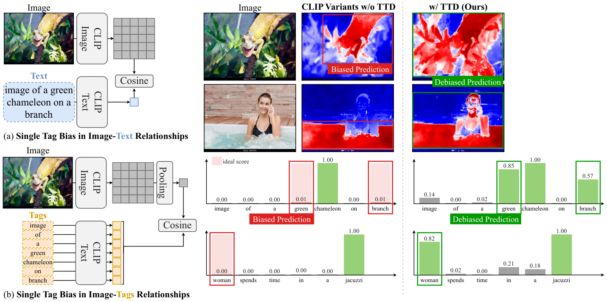
Single tag bias. In existing image-text alignment models, embeddings focus predominantly on a single tag. (a) The similarity map between the pixels of the image and the text shows activation only in the region of a single tag (red box), ignoring other relevant tags. (b) The similarity values between the image and each tag in the text highlight a single tag, while other descriptive tags (e.g., “green” and “branch”) are treated similarly to insignificant tags (e.g., “of” and “a”). The predictions with TTD (green boxes) are debiased. The analysis uses TCL.
CLIP-based models suffer from single tag bias: a disproportionate focus on one tag (word) of the text while the other pertinent tags are neglected. TTD builds on the finding that pixels are closely correlated with a specific tag. Scoring each tag by its nearest pixel extracts the tags that reflect the image-text relationship, and distilling the union of their maps into the text's map lets the model recognize all relevant tag regions, not just one, using only image-text pairs.
Image-text alignment models are useful for various open-vocabulary tasks, but they suffer from single tag bias. To alleviate it, extracting the tags that reflect the image-text relationship from the text is crucial. Existing research often relies on external NLP models that extract tags from the text alone, without considering the image, which leads to two issues.
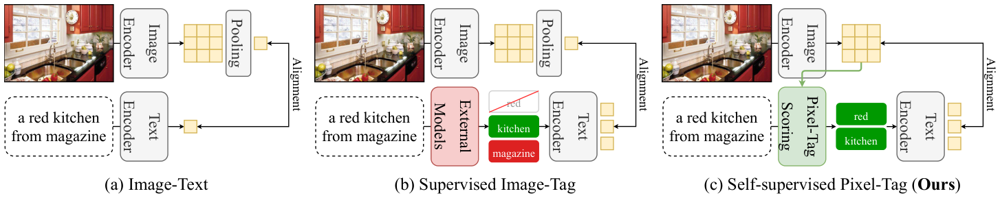
Previous approaches and ours. (a) Image-text alignment models suffer from single tag bias. (b) Existing research often relies on external NLP models to extract tags without considering images. (c) TTD selects tags using only pixel information from images, eliminating the need for external models.
Tag selection with external NLP models extracts tags that do not correlate with the corresponding image content, because these models do not consider image information.
The same models cannot select some of the tags that are related to the image, particularly non-nouns in the case of NLTK, which extracts the nouns of the text.
We identify a critical bias in contemporary CLIP-based models, which we denote as single tag bias. This bias manifests as a disproportionate focus on a singular tag (word) while neglecting other pertinent tags, stemming from CLIP embeddings prioritizing one specific tag in image-text relationships.
In this paper, we introduce a novel two-step fine-tuning approach, Text-Tag Self-Distillation (TTD), to address this challenge. We first extract all image-relevant tags from text based on their similarity to the nearest pixels. Then, we distill a combined mask containing the extracted tags' content to a text-derived mask.
This approach ensures the unbiased image-text alignment of the CLIP-based models using only image-text pairs without necessitating additional supervision. Our technique demonstrates model-agnostic improvements in multi-tag classification and segmentation tasks, surpassing competing methods that rely on external resources. The code and data are available at https://github.com/shjo-april/TTD.
We identify single tag bias in pre-trained CLIP-based models, where the focus is disproportionately on a single tag in image-text relationships.
We propose a novel fine-tuning method, Text-Tag Self-Distillation (TTD), which addresses single tag bias using only image-text pairs.
We achieve superior multi-tag classification and segmentation by enhancing image-text alignment, and provide new tag and mask annotations related to text inputs.
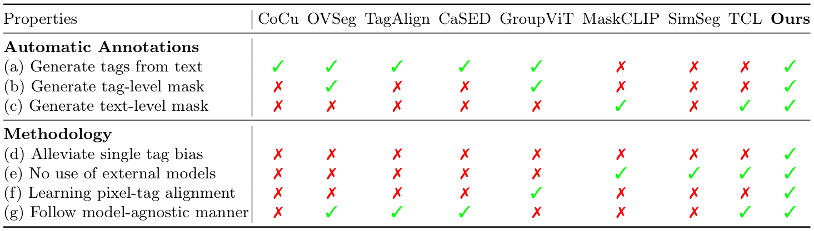
Comparison with related approaches. Among the compared methods, TTD is the only one that alleviates single tag bias, and the only one that covers all seven properties: it generates tags, tag-level masks and text-level masks, uses no external models, learns pixel-tag alignment, and follows a model-agnostic manner.
TTD is a fine-tuning method with two stages: tag selection by pixel-tag scoring, which extracts the tags that represent the image-text relationship, and text-tag self-distillation, which transfers their knowledge to the text.
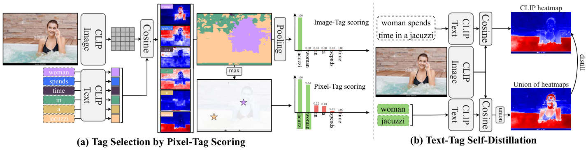
High-level overview of TTD. (a) The global image embedding often emphasizes a single tag (“jacuzzi” here) due to overactivation in pixel embeddings. The colored similarity map shows the most relevant tag for each pixel, and the similarity between each tag and its most correlated pixel is used as the score. (b) The similarity map between image and text should reflect all relevant tags but often highlights only one, so it is trained to align with the combined maps of the image and the pseudo-tags from (a).
Scoring a tag by its similarity to the pooled image embedding is affected by single tag bias, because most pixels tend to be biased towards a specific tag. TTD instead scores each tag with the pixel embedding most correlated with it, the maximum cosine similarity over all pixels. These similarity values are reused as similarity maps for distillation, which mitigates the additional computational burden.
All tags are arranged by their pixel-tag score, and the score difference between consecutive tags is computed. A substantial gap separates the tags associated with the image from the others, so the largest score gap is used as the boundary and the high-scoring tags become pseudo-tags. Unlike image-tag scoring, which relies on heuristics such as the top-k tags or a constant threshold, this selection identifies appropriate tags automatically.
The union (pixel-wise maximum) of the min-max normalized similarity maps of the pseudo-tags is the ideal image-text map. The distillation loss Ldistill aligns the similarity map of the text with this union, with a stop-gradient on the union map. An auxiliary loss Ltag drives the maps of non-selected tags toward zero and aligns the maps of selected tags with their normalized maps. The final loss is Ldistill + Ltag.
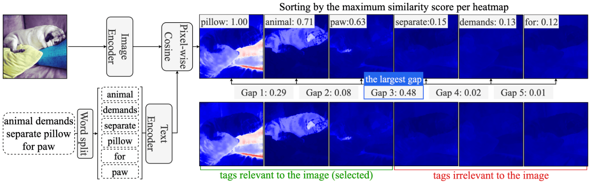
Tag selection by pixel-tag scoring. With the similarity to the most correlated pixel as the score, a significant gap appears between the tags related to the image and the irrelevant ones. The tags above the largest score gap are selected: in this example the largest gap (0.48) lies between “paw” (0.63) and “separate” (0.15).
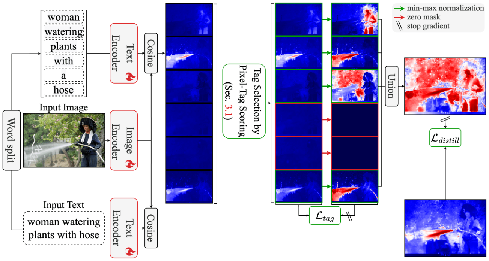
Overall framework. The pseudo-tags obtained through tag selection are used to create an ideal heatmap representing the image-text relationship. Single tag bias is addressed by distilling information between the ideal and actual heatmaps, and an auxiliary loss learns the pixel-tag relationship. Throughout this process, both the image and text encoders are trained.
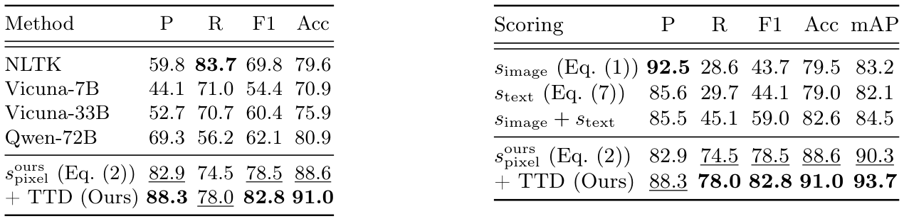
Multi-tag selection. (Left) Pixel-tag scoring outperforms NLP models in both F1 score and accuracy, and performs even better after fine-tuning with TTD. (Right) Image-tag scoring and text-tag scoring show high precision but very low recall due to single tag bias, whereas pixel-tag scoring shows high recall. P, precision; R, recall; F1, F1 score. The best results are bold and the second best are underlined.
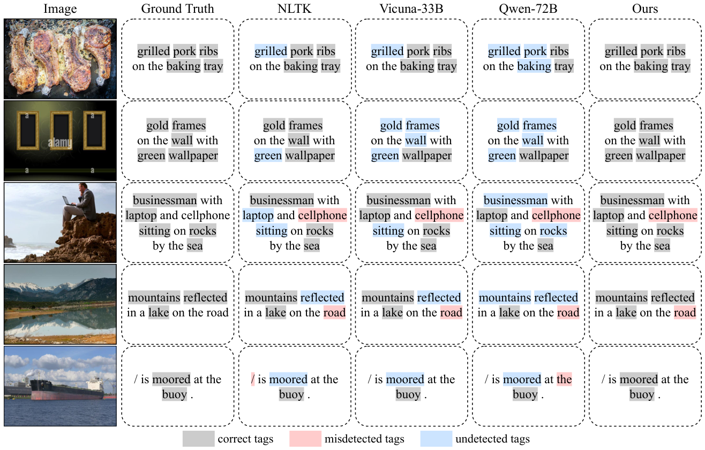
Tag selection with external models and with TTD. Tag selection using external models (NLTK, Vicuna-33B, Qwen-72B) suffers from two problems because the image is not considered: misdetected tags (red) that do not correlate with the image content, and undetected tags (blue) that are related to the image, particularly non-nouns in the case of NLTK.
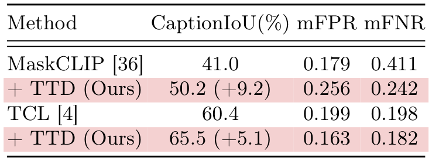
Text-level semantic segmentation. Fine-tuning with TTD improves CaptionIoU by +9.2% for MaskCLIP and +5.1% for TCL (+7.2% on average). The mFNR of MaskCLIP decreases by 0.169, indicating its improved understanding beyond a single tag, and TCL shows a decrease in mFPR.
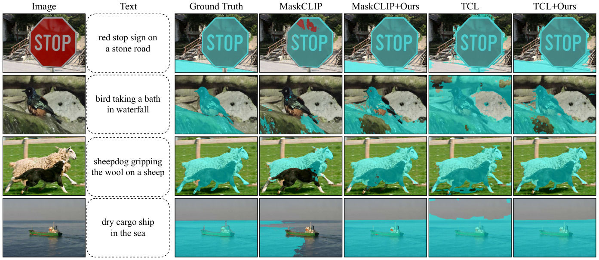
Text-level segmentation with and without TTD. The original models show single tag bias, mainly capturing the region of only one tag, and TCL often generates masks that extend beyond the relevant context. After fine-tuning with TTD, the models accurately activate all regions associated with the image-related tags in the text.
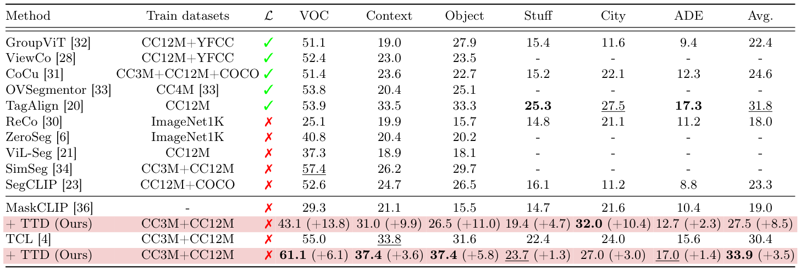
Open-vocabulary semantic segmentation (mIoU). All methods are trained only with image and text data, without additional annotations or external models, and use ViT-B/16 as the backbone. TTD increases the average mIoU by 8.5% for MaskCLIP and 3.5% for TCL, and TCL with TTD outperforms the existing models on PASCAL VOC, PASCAL Context and COCO-Object. L, external language models.
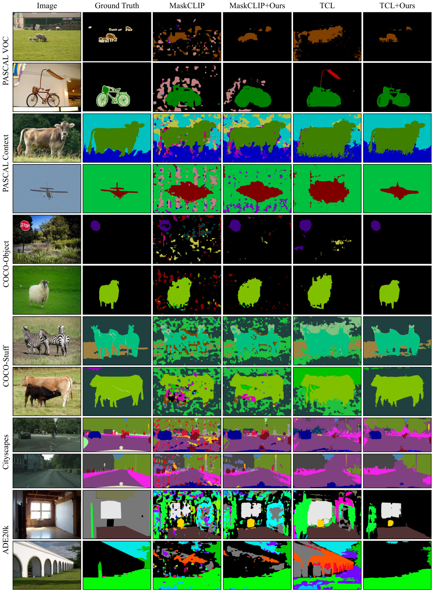
Segmentation with and without TTD. With TTD, the models detect the objects that are present in the image, unlike the original models, which identify objects not actually present in the image.
The ablations use TCL as the baseline model, and PASCAL VOC for tag-level segmentation (mIoU).
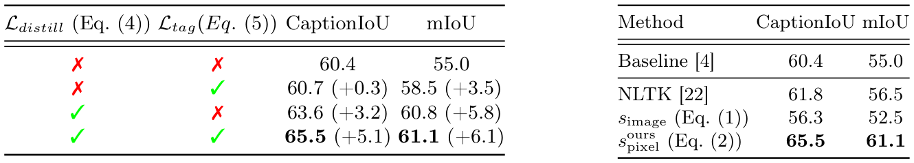
Both losses and pixel-tag scoring matter. (Left) Ldistill improves CaptionIoU by +3.2% and mIoU by +5.8%, and the best performance is achieved when both losses are combined. (Right) Selecting tags with NLTK results in a minor improvement and image-tag scoring results in a decline in both metrics, while pixel-tag scoring performs best.
@inproceedings{jo2024ttd,
title = {TTD: Text-Tag Self-Distillation Enhancing Image-Text Alignment in CLIP to Alleviate Single Tag Bias},
author = {Jo, Sanghyun and Ryu, Soohyun and Kim, Sungyub and Yang, Eunho and Kim, Kyungsu},
booktitle = {European Conference on Computer Vision (ECCV)},
year = {2024}
}